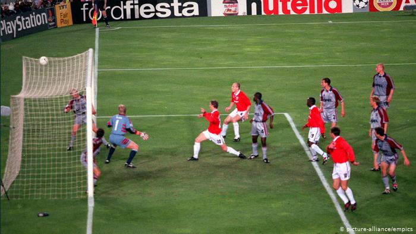
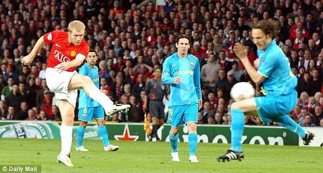
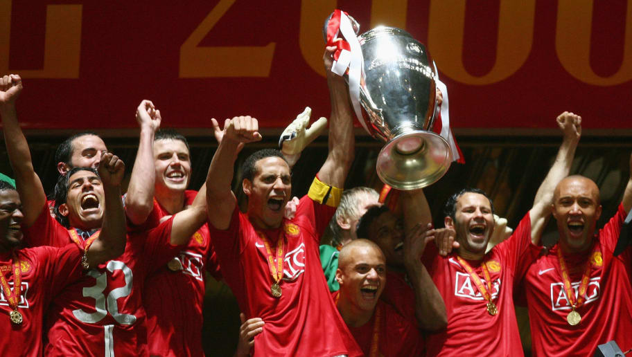
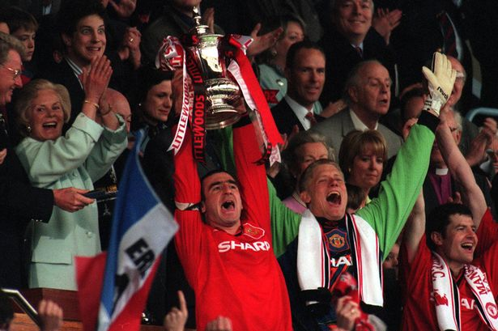
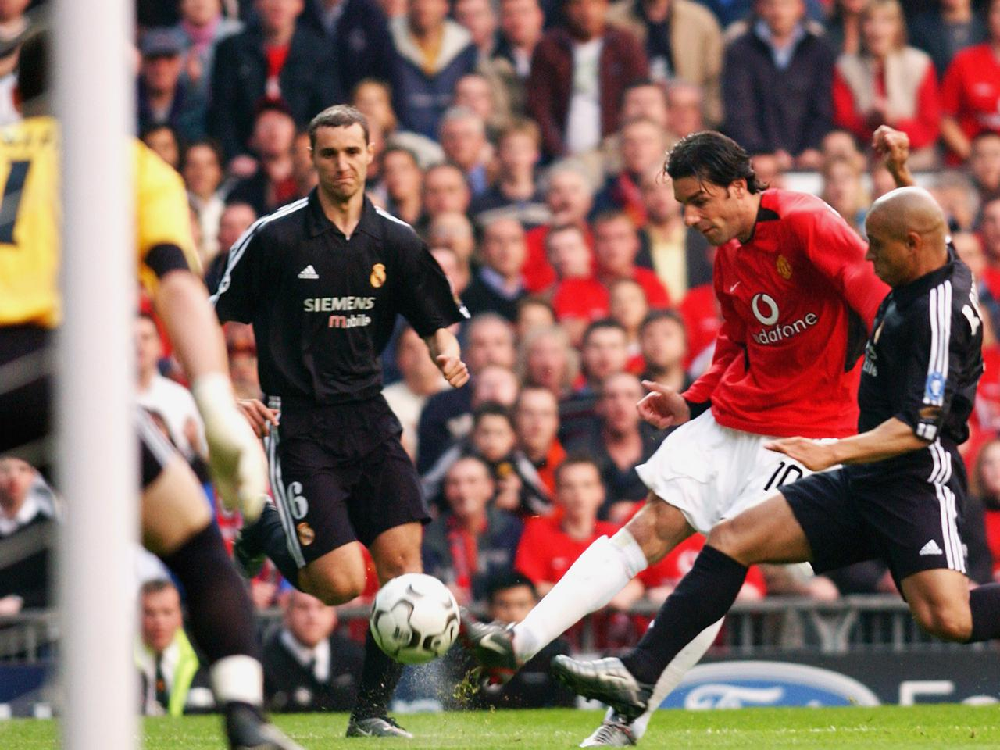
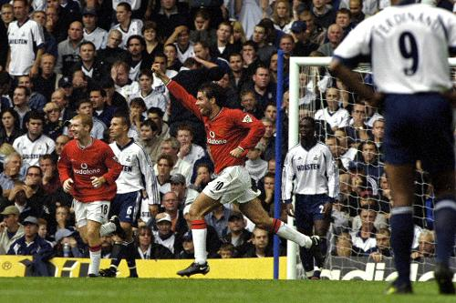

Man Uniteds greatest comeback, was over Bayern in the 1999/2000 Champions league Final. They were 1-0 down until the 90th minute when Teddy Sherringham struck back. In what was only a dream until 5 minutes back, current Man United manager Ole Gunnar Solskjaer scored a winner making it 2-1 in the 92nd minute, winning the Champions league title. This was a remarkable match, as it won them not only the Champions League as well as the treble.
Old Trafford on nights like this is just an awesome arena. The Reds had drawn 0-0 in Spain and even Lionel Messi couldn’t deny them in the second leg when a Paul Scholes rocket lifted the roof off the stadium and a tense finale added to the nerve-wracking drama.
Nip and tuck for 120 minutes in the early hours of a Russian morning, the first all-English final went to penalties. United’s man of that season Cristiano Ronaldo missed his spot kick to leave Chelsea captain John Terry the chance to win the trophy, but he missed. Ryan Giggs became United’s all-time top appearance maker on the night and scored his penalty to hand the match-winning moment to Edwin Van der Sar as he saved Anelka’s spot kick.
It was one of the most forgettable cup finals Wembley had ever seen but Eric Cantona’s winner vindicated Fergie’s decision to stick with the Frenchman after his ban and also the previous summer’s decision to promote the Class of ‘92. This 1-0 win completed a second double.
United may have lost the tie but this night had everything. A sensational hat-trick from the Brazilian superstar Ronaldo won him a standing ovation when he was subbed. Then David Beckham, controversially on the bench amid stories he was off to Spain, launched a fightback. United won 4-3.
United have had many thrilling comebacks in Fergie’s time but this one at White Hart Lane was remarkable. Spurs were 3-0 up at half-time and the Reds, with Ruud van Nistelrooy, Seba Veron and Laurent Blanc, were struggling. But all three newcomers scored in a second- half revival as United won 5-3.
